HeyGen • Avatar Creation
Avatar Creation
The problem
Until this, an avatar in the app was a collection of looks. Some were photo looks, some were video looks. The video looks ran on the Avatar III motion model and were cheaper to make. The photo looks ran on Avatar IV, and didn’t quite look like you. Your voice was a separate thing entirely, made in a separate flow.
The goal
A real avatar of you is three things: how you look, how you move and how you sound. The new Avatar V model drives all three. Record a short clip of yourself, we clone your voice from it, then upload, shoot or generate any picture of you, and the result looks, sounds and acts like you. This flow is how a brand-new user gets there.
An avatar is three things
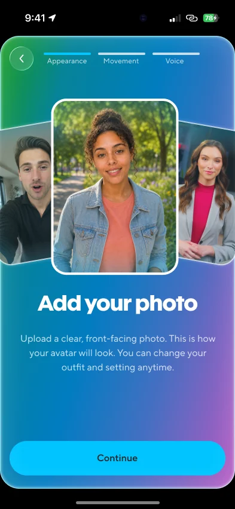
AppearanceAny picture of you: upload one, take one, or generate one. Outfit and setting can change later.
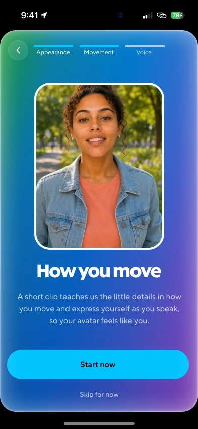
MotionA short clip of you talking teaches the model the little details of how you move and express yourself.
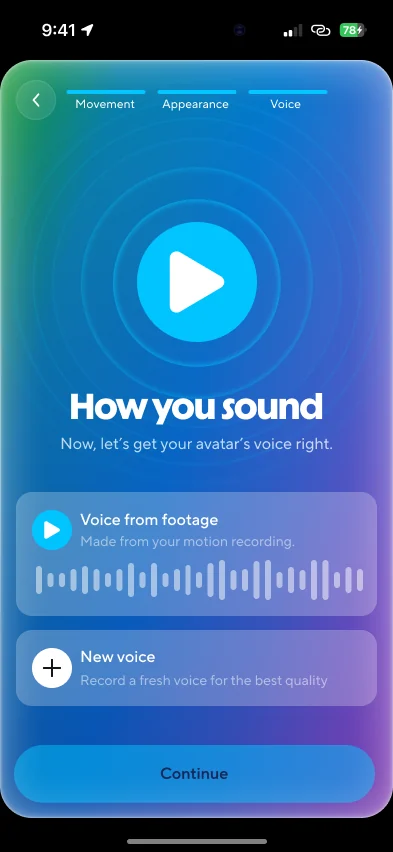
VoiceCloned from the same clip, so there’s nothing extra to do. Or record a clean one for the best quality.
The first-run flow
Every screen a new user sees, in order. One clip does most of the work: it captures how you move and gives us your voice, so the only thing left to add is a photo.
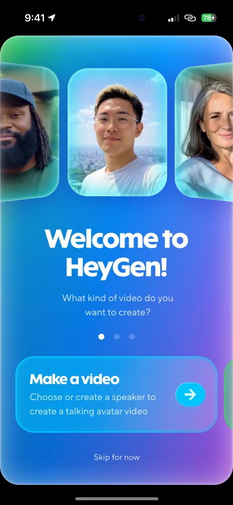
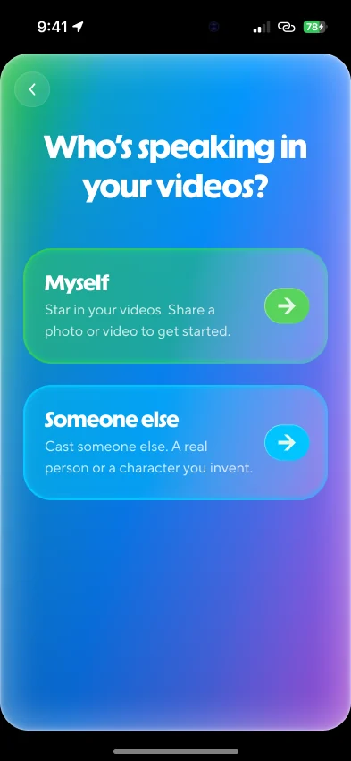
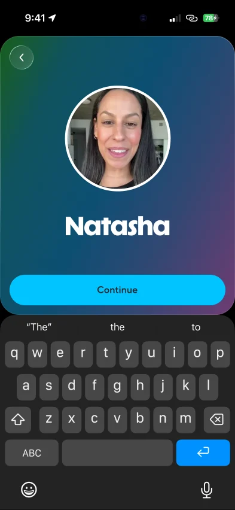
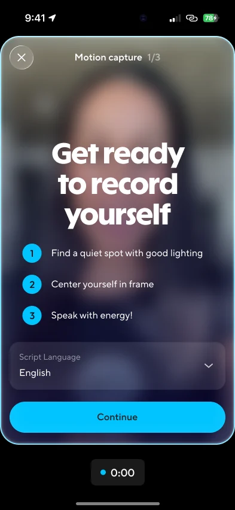
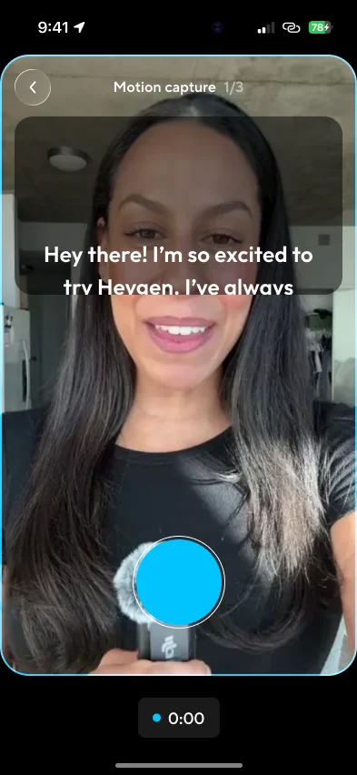
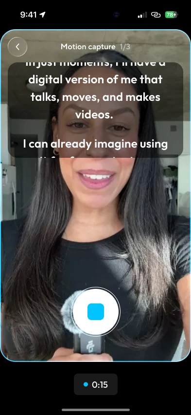
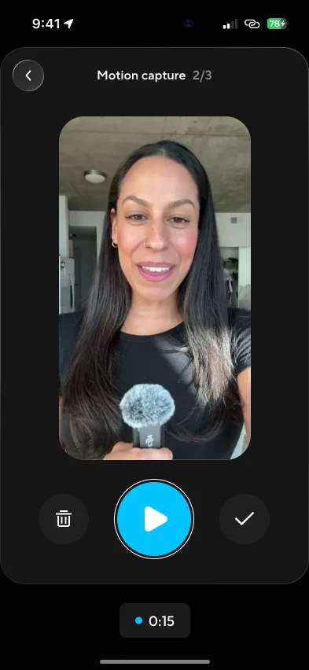
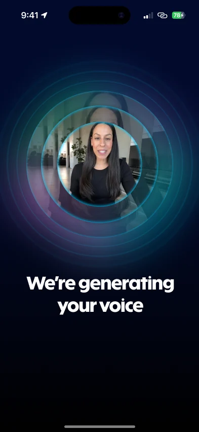
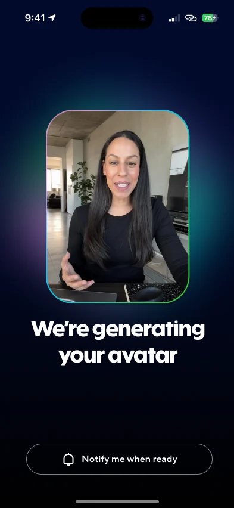
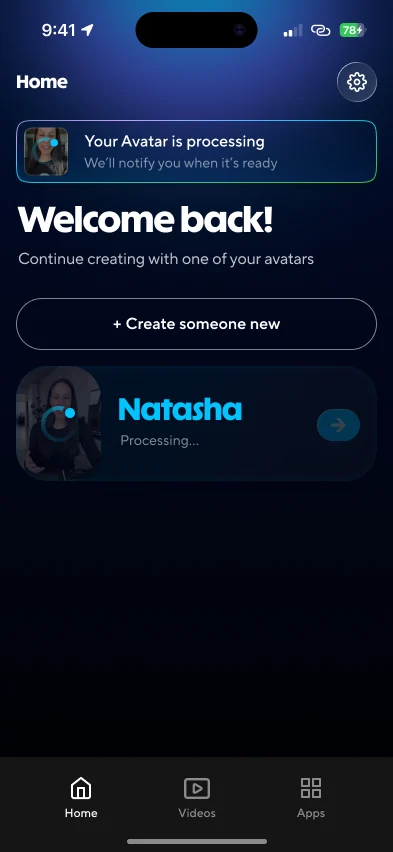
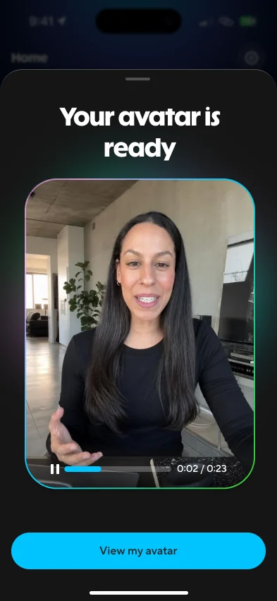
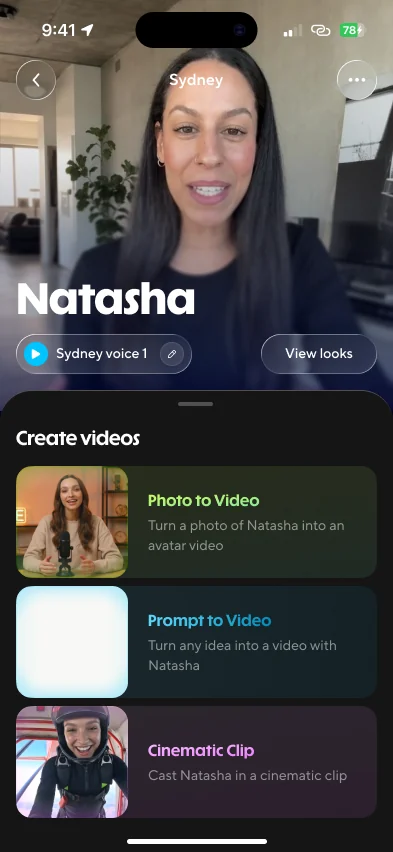
Recording a new voice
If the voice from your clip isn’t good enough, you can record a clean one: read a short script after a countdown, name it, and pick from three styles once it’s cloned.
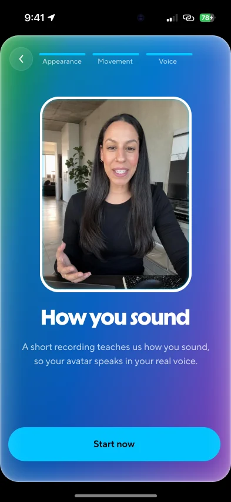
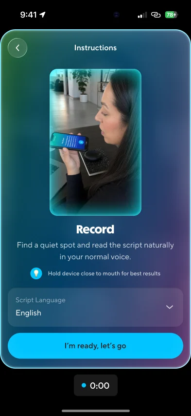
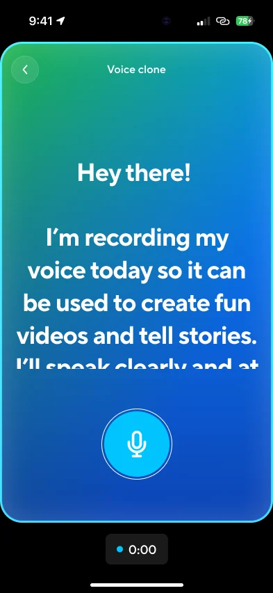
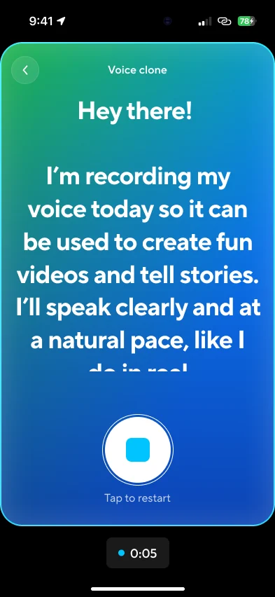
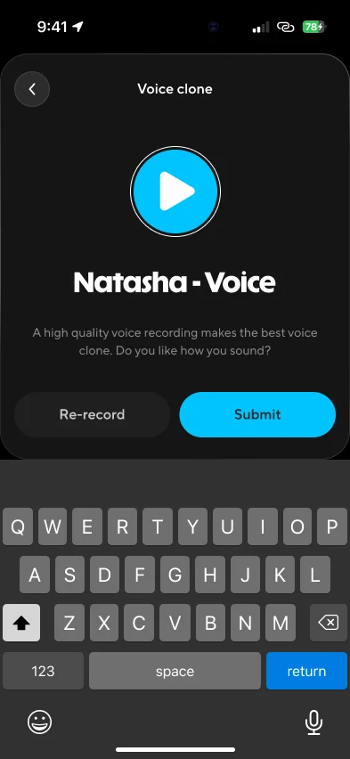
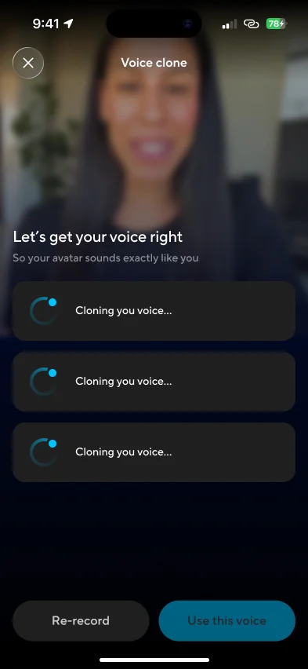
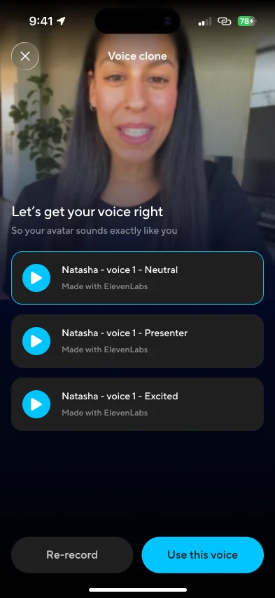